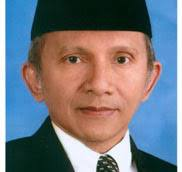
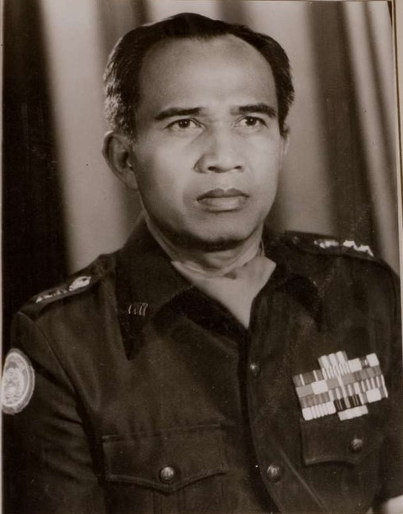

Tokoh-tokoh yang terlibat
- 1. Soeharto
Jabatan: Presiden Republik Indonesia
Peran: Pemimpin yang berkuasa selama 32 tahun, Soeharto mengundurkan diri
pada 21 Mei 1998 sebagai respons terhadap tekanan dari masyarakat dan demonstrasi besar-besaran.

- 2. Amien Rais
Jabatan: Politisi, Ketua Umum PAN (Partai Amanat Nasional)
Peran: Salah satu tokoh reformasi yang berpengaruh, Amien Rais menggerakkan massa dan menjadi suara utama dalam mendorong
perubahan politik.

- 3. Megawati Soekarnoputri
Jabatan: Politisi, Ketua Umum PDI (Partai Demokrasi Indonesia)
Peran: Meskipun pada saat itu belum menjadi presiden, Megawati adalah simbol perlawanan terhadap rezim
Orde Baru dan turut mendukung gerakan reformasi.

- 4. B.J. Habibie
Jabatan: Wakil Presiden yang menjadi Presiden setelah pengunduran Soeharto
Peran: Mengambil alih kepemimpinan setelah Soeharto, B.J. Habibie memperkenalkan reformasi politik dan ekonomi,
serta mempersiapkan pemilihan umum.

- 5. Rais Abin
Jabatan: Tokoh masyarakat
Peran: Terlibat dalam upaya mengorganisir gerakan dan demonstrasi yang menuntut perubahan.

- 6. Lembaga Swadaya Masyarakat (LSM)
Contoh: YLBHI (Yayasan Lembaga Bantuan Hukum Indonesia)
Peran: Banyak LSM yang mendukung gerakan pro-demokrasi dan membantu mendokumentasikan pelanggaran hak asasi manusia.
- 7. Media Massa
Contoh: Beberapa jurnalis dan media yang berani memberitakan fakta-fakta tentang demonstrasi dan kerusuhan.
Peran: Media berfungsi sebagai saluran informasi bagi masyarakat, meskipun pada saat itu banyak juga yang dibungkam.